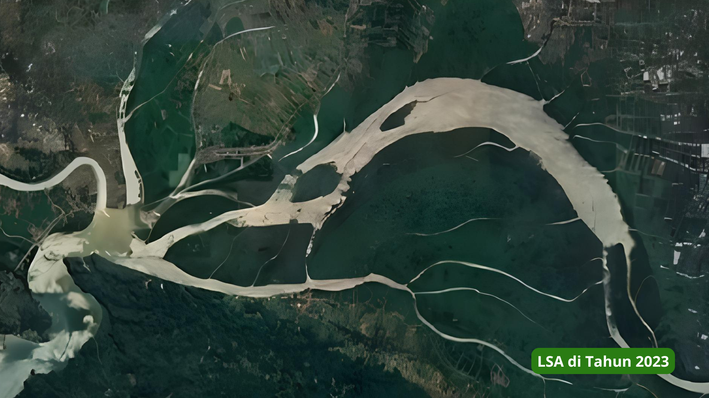
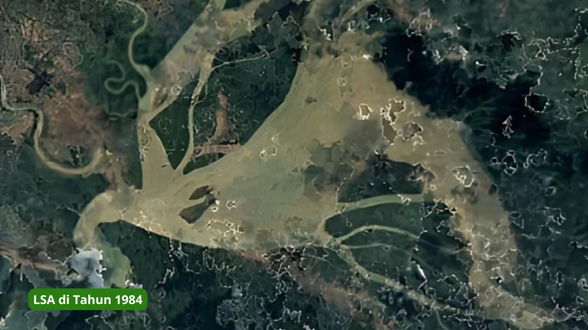
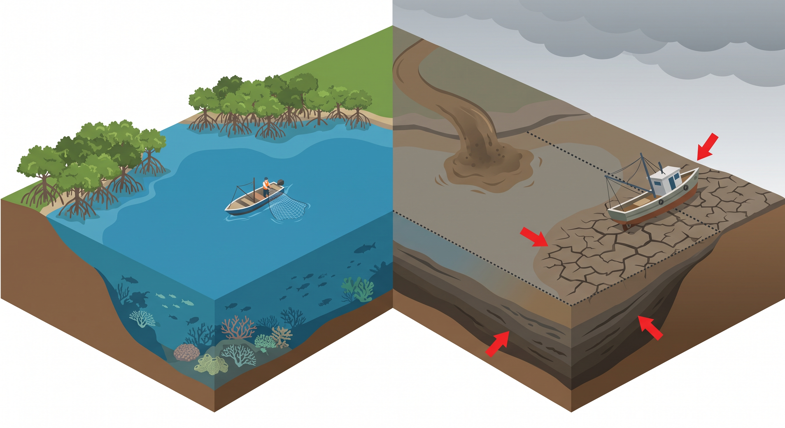
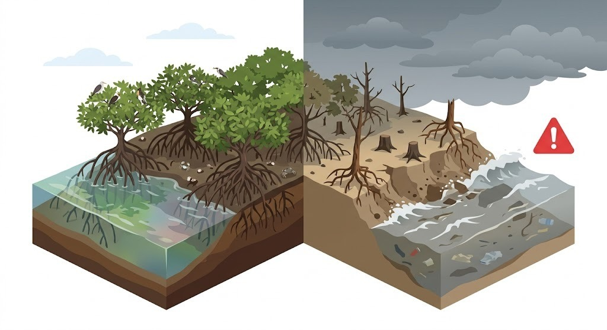
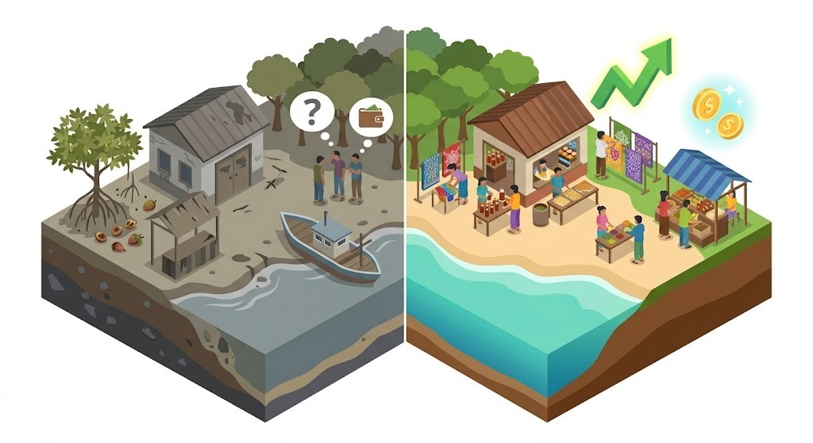

Langkah Baru untuk
Masa Depan Pesisir
Memantau, melestarikan, dan mengedukasi demi keberlanjutan lingkungan.
Memantau, melestarikan, dan mengedukasi demi keberlanjutan lingkungan.
Laguna Segara Anakan di Kabupaten Cilacap menghadapi tekanan lingkungan yang memengaruhi keberlangsungan ekosistem pesisir. Mulai dari penyusutan luas perairan akibat sedimentasi, kondisi ekosistem mangrove, hingga pemanfaatan potensi mangrove yang masih perlu dikembangkan.


Sumber citra: Google Earth
Luas Perairan LSA (1984)
Luas Perairan LSA (2023)
Sedimen Masuk per Tahun

Sedimentasi terus menggerus perairan Segara Anakan, memicu pendangkalan dan penyusutan yang mengancam keseimbangan ekosistem pesisir.

Di tengah perubahan pesisir, ekosistem mangrove menghadapi ancaman yang dapat menghilangkan habitat biota dan melemahkan benteng alami pelindung pantai.

Potensi mangrove Kampung Laut menyimpan peluang besar bagi alam dan masyarakat. Saatnya mengubah kekayaan ekologis menjadi manfaat berkelanjutan melalui inovasi dan pemberdayaan.
Pendekatan terpadu berbasis teknologi dan partisipasi aktif untuk menjawab tantangan pesisir Laguna Segara Anakan.

Proyek ALBATROSS berfokus pada perancangan dan pengembangan alat untuk memantau parameter perairan di kawasan Kampung Laut. Data yang diperoleh diolah dan divisualisasikan dalam bentuk peta untuk memberikan gambaran kondisi perairan serta mendukung pemantauan aktivitas fauna di kawasan mangrove.

Kegiatan penanaman mangrove bersama masyarakat setempat sebagai upaya mendukung pelestarian ekosistem pesisir di Kampung Laut. Mangrove memiliki peran penting dalam menjaga keseimbangan lingkungan, menyediakan habitat bagi berbagai biota, serta membantu melindungi kawasan pesisir.

Mangrove memiliki potensi untuk diolah menjadi berbagai produk bernilai guna. Pengenalan dan penyebaran informasi mengenai hasil olahan tersebut diharapkan dapat meningkatkan wawasan masyarakat tentang potensi produk lokal serta mendukung pengembangannya agar lebih dikenal luas.